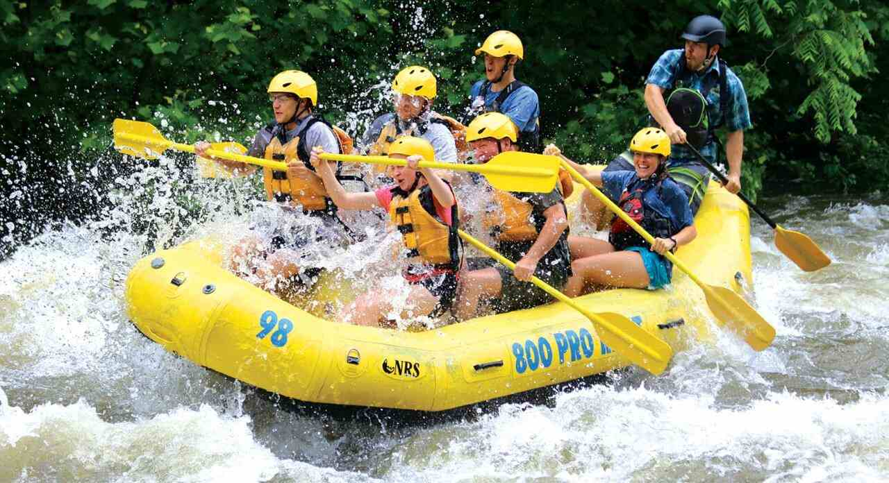
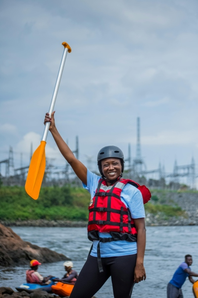

Welcome to Rapids, your ultimate destination for thrilling rafting adventures! Our team is dedicated to providing you with unforgettable experiences on the water. Whether you're a seasoned rafter or a first-timer, we have the perfect trip for you. Join us as we navigate through breathtaking landscapes and conquer exciting rapids. Safety is our top priority, and our experienced guides are here to ensure you have a fun and safe journey. Book your adventure today and make memories that will last a lifetime!


RAPIDS
"History"
Rapids was founded in 2010 by a group of passionate adventurers who wanted to share their love for rafting with others. Over the years, we have grown into a leading rafting company, known for our commitment to safety, customer satisfaction, and environmental stewardship. Our team consists of experienced guides who are not only skilled in navigating rapids but also dedicated to educating our guests about the natural beauty and ecology of the rivers we explore. Join us on a journey through history as we continue to create unforgettable rafting experiences for all our guests.